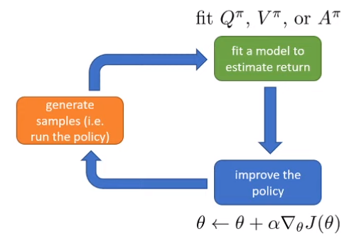

Improving the policy gradient
Policy Gradient에서는 다음과 같은 cost function을 minimize 하는 방향으로 학습이 이뤄진다.
\[ \nabla_{\theta} J(\theta) \approx \frac{1}{N} \sum_{i=1}^N \sum_{t=1}^T \nabla_{\theta} \log \pi_{\theta}(a_{i, t} | s_{i, t}) \Big( \sum_{t'=1}^T r(s_{i, t'}, a_{i, t'}) \Big) \]
이 식에서 마지막에 있는 \(\sum_{t'=1}^T r(s_{i, t'}, a_{i, t'})\) 부분을 reward-to-go (이동 보상)이라고 하는데, 식이 의미하는 것은 \(i\) 번째 iteration에서 얻을 수 있는 reward의 총합이다. 이렇게 reward의 총합으로 사용할 수도 있고, 이를 대신하여 \(\hat{Q}_{i, t}\) 를 사용할 수도 있다. 이는 특정 state \(s_{i, t}\) 에서 action \(a_{i, t}\) 를 취했을 때, 얻을 수 있는 expected reward의 추정치를 나타내는 것인데, 그러면 이 추정치를 얼마나 정확하게 구할 수 있을까가 문제가 된다. 당연히 현재의 환경이 randomness를 띄는 이상, 동일한 trajectory를 수행해도 expected reward가 다를 수 있다. 그래서 single trajectory를 통해서 reward-to-go를 구하면, 그만큼 high variance를 가지게 되고, 동일한 trajectory를 여러번 수행하면서 누적된 reward를 바탕으로 reward-to-go를 구하면, low variance를 가질 것이다. 이렇게 우리가 만약 진짜 expected reward-to-go를 아래와 같이
\[ Q(s_t, a_t) = \sum_{t'=t}^T \mathbb{E}_{\pi_{\theta}} [r(s_{t'}, a_{t'}) | s_t, a_t] \]
이라고 정의할 수 있다면, 앞에서 소개한 cost function의 마지막 부분도 위 식으로 대체할 수 있을 것이다.
\[ \nabla_{\theta} J(\theta) \approx \frac{1}{N} \sum_{i=1}^N \sum_{t=1}^T \nabla_{\theta} \log \pi_{\theta}(a_{i, t} | s_{i, t}) Q(s_{i, t}, a_{i, t}) \]
What about the baseline?
여기에서 단순히 Q-value를 사용하면 좋고 나쁜 정도의 scale에 의한 차이가 발생하게 되고, 이로 이해서 bias가 발생하게 된다. 이 bias를 없애기 위한 방법으로 그냥 Q-value를 사용하는게 아니라, Q-value의 average를 빼는 방법을 사용할 수 있는데, 이를 baseline 이라고 한다.
\[ \begin{aligned} \nabla_{\theta} J(\theta) \approx \frac{1}{N} \sum_{i=1}^N \sum_{t=1}^T \nabla_{\theta} \log \pi_{\theta}(a_{i, t} | s_{i, t}) ( Q(s_{i, t}, a_{i, t}) - b) \\ \text{where } b_t = \frac{1}{N} \sum_{i=1}^N Q(s_{i, t}, a_{i, t}) \end{aligned} \]
이렇게 baseline을 빼주면 Q-value의 평균보다 높은 부분과 낮은 부분이 명확하게 구분되면서 unbiased 한 성격을 띄게 되고, 이는 variance를 줄여주는 효과를 가지게 된다. 그런데 단순히 Q-value의 평균을 빼주는 것이 아니라, 다른 값으로도 baseline을 빼주는 것이 가능하다. 보통 Q-function은 state와 action에 대한 함수인데, 이를 state에 대한 함수, 즉 Value function $ V(s_t) = {a_t {}(a_t | s_t)} [Q(s_t, a_t)] $ 로 사용할 수도 있다. 그러면 기존의 cost function은 아래와 같이 변형될 수 있다.
\[ \nabla_{\theta} J(\theta) \approx \frac{1}{N} \sum_{i=1}^N \sum_{t=1}^T \nabla_{\theta} \log \pi_{\theta}(a_{i, t} | s_{i, t}) ( Q(s_{i, t}, a_{i, t}) - V(s_{i, t})) \]
이렇게 Q-value에서 V-value를 빼주는 것의 의미는 state \(s_{i, t}\) 에서 action \(a_{i, t}\) 를 취했을 때, \(s_{i, t}\) 에서 얻을 수 있는 평균 value보다 얼마나 좋은지를 나타내는 지표가 되는 것이다. 그러면 이에 대한 gradient descent를 취하게 되면 평균보다 좋은 action에 대해서는 encourage하고, 평균보다 나쁜 action에 대해서는 discourage하는 효과를 가지게 되고, 결과적으로 variance를 줄여주면서 policy gradient의 학습을 더 빠르게 만들어주는 효과를 가지게 된다. 참고로 이 부분을 advantage function 이라고 한다.
State & State-action value functions
그러면 advantage function을 계산할 때 필요한 각각의 value function이 어떤 의미를 가지는지 다시 살펴볼 필요가 있다.
\[ Q^{\pi}(s_t, a_t) = \sum_{t'=t}^T \mathbb{E}_{\pi_{\theta}} [r(s_{t'}, a_{t'}) | s_t, a_t] \]
Q value, 혹은 state-action value function 이라는 것은 state \(s_t\) 에서 \(a_t\) 를 취했을 때 얻을 수 있는 total reward를 말한다. policy마다 이 Q value가 다 다를수 있기 때문에 이를 명시하기 위해서 \(\pi\) 라는 것을 Q에 넣어주는 표기를 취한다.
\[ V^{\pi}(s_t) = \mathbb{E}_{a_t \sim \pi_{\theta}(a_t | s_t)} [Q^{\pi}(s_t, a_t)] \]
V value (state value function)는 state \(s_t\) 에서 얻을 수 있는 total reward의 기댓값을 말한다. 이 때는 policy \(\pi\) 에 의해서 action이 결정되기 때문에 위의 Q value의 총합의 형태로 나오게 된다. 그리고 이어서 나오는 값이 앞에서 나온 advantage function이다.
\[ A^{\pi}(s_{t}, a_{t}) = Q^{\pi}(s_{t}, a_{t}) - V^{\pi}(s_{t}) \]
Advantage function은 state \(s_t\) 에서 취한 action \(a_t\)가 평균보다 얼마나 좋은지, 말그대로 얼마나 advantage를 가지는지를 나타내는 값이다. 이를 활용하면 앞에서 소개한 Policy Gradient 식은 다음과 같이 정리할 수 있다.
\[ \nabla_{\theta} J(\theta) \approx \frac{1}{N} \sum_{i=1}^N \sum_{t=1}^T \nabla_{\theta} \log \pi_{\theta}(a_{i, t} | s_{i, t}) A^{\pi}(s_{i, t}, a_{i, t}) \]
만약 advantage의 추정값이 정확해진다면, 그만큼 잘된 action과 잘못된 action에 대한 차이가 명확해지고, 이는 variance를 줄여주는 효과를 가지게 된다. 물론 추정값이 정확하지 않으면서 bias가 생기는 문제를 해결하기 위해서 baseline을 빼주는 방법을 사용할 수 있다.
\[ \nabla_{\theta} J(\theta) \approx \frac{1}{N} \sum_{i=1}^N \sum_{t=1}^T \nabla_{\theta} \log \pi_{\theta}(a_{i, t} | s_{i, t}) \big( \sum^T_{t=t'} r(s_{i, t'}, a_{i, t'}) - b \big) \]
이와 같이 total reward를 사용하는 monte calro estimate를 사용하게 되면 bias가 발생하지 않지만, 이렇게 계산한 total reward는 policy가 어떤 trajectory를 따라 갔느냐에 따라서 다르게 나오게 되기에, single sample에 대한 variance가 매우 크게 나타난다.

Figure 1 에 나와 있는 것처럼 Policy Gradient의 수행은
- 주어진 policy \(\pi_{\theta}\) 에 대해서 trajectory를 생성한다.
- trajectory의 return을 추정할 수 있는 model을 학습한다.
- model을 기반으로 policy를 update한다.
의 과정으로 나눠질텐데, 이제 성능을 개선하기 위해서는 trejectory의 return을 얼마나 정확하게 학습할 것인지가 중요해진다.
Value function fitting
그러면 소개된 내용처럼 다양한 value function (\(Q^{\pi}, V^{\pi}, A^{\pi}\))이 있고, 이 중 어떤 것을 사용할 것인지 궁금할 수 있다. 먼저 Q value를 다시 나열해보면
\[ \begin{aligned} Q^{\pi}(s_t, a_t) &= \sum_{t'=t}^T \mathbb{E}_{\pi_{\theta}} [r(s_{t'}, a_{t'}) | s_t, a_t] \\ &= r(s_t, a_t) + \sum_{t'=t+1}^T \mathbb{E}_{\pi_{\theta}} [r(s_{t'}, a_{t'}) | s_t, a_t] \\ \end{aligned} \]
와 같이 현재의 reward와 state \(s_t\), action \(a_t\) 에서의 future reward의 합으로 표현할 수 있는데, 사실 뒤의 식은 \(s_{t+1}\) 에서의 V value와 같다는 것을 알 수 있다. 그러면
\[ \begin{aligned} Q^{\pi}(s_t, a_t) &= r(s_t, a_t) + \mathbb{E}_{s_{t+1} \sim p(s_{t+1} | s_t, a_t)} [V^{\pi}(s_{t+1})] \\ &\approx r(s_t, a_t) + V^{\pi}(s_{t+1}) \end{aligned} \]
라고 정리할 수 있다. 여기서 두번째 식을 보면 expectation 값이 하나의 V value로 근사화되어 있는 것이 보이는데, 물론 이 값은 정확한 값이 아니다. 앞에서 언급된 것처럼 single sample로 reward sum을 계산한 값은 variance가 크기 때문에 정확하다고 볼수는 없지만, 그래도 single sample에 대해서 근사한 값을 결과적으로 전체 sample에 대해서 fitting하게 되므로 결과적으로 이런 근사값을 그대로 사용할 수 있다. 그럼 이 값을 굳이 왜 구했느냐? 바로 아래 식으로 정리하기 위해서다.
\[ \begin{aligned} A^{\pi}(s_t, a_t) &\approx Q^{\pi}(s_t, a_t) - V^{\pi}(s_t) \\ &\approx r(s_t, a_t) + V^{\pi}(s_{t+1}) - V^{\pi}(s_t) \end{aligned} \]
Advantage function이 Q value와 V value로 이뤄져 있지만, Q value가 결국은 V value로 구할 수 있는 값이기에, 다시 정리를 하면 V value, 즉 state에만 dependent한 function이 되는 것이다. 이렇게 되면 굳이 state와 action 두가지 변수가 아닌 state 하나만 신경쓰면 되기 때문에 조금 더 학습이 용이해진다. 그러면 이제 V function만 잘 추정할 수 있는 신경망 모델을 학습시키면 된다. (물론 추후에 다루겠지만, state와 action을 모두 학습하는 형태도 존재한다.)
Policy evaluation
\[ V^{\pi}(s_t) = \sum_{t'=t}^T \mathbb{E}_{\pi_{\theta}} [r(s_{t'}, a_{t'}) | s_t] \]
결과적으로 지금까지 하려는 일은 \(V^{\pi}\) 를 계산하는 것인데, 이는 현재 state \(s_t\) 에서의 value를 계산하는 것이므로, 어떻게 보면 현재의 policy의 value를 평가하는 policy evaluation이라고 할 수 있다. 만약 initial state \(s_1\) 에서의 policy evaluation을 수행했다면, 그때의 policy gradient는 다음과 같을 것이다.
\[ J(\theta) = \mathbb{E}_{s_1 \sim p(s_1)} [V^{\pi}(s_1)] \]
policy gradient에서는 앞에서 소개된 것처럼 Monte Carlo policy evaluation, 즉 처음부터 종료될 때까지의 모든 reward의 총합에 대한 기대치를 바탕으로 계산하는데, 사실 한개의 sample에 대해서만 expectation을 구하는 것이라면 굳이 기대값을 구하지 않더라도 \(V^{\pi}(s_t) \approx \sum_{t'=t}^T r(s_{t'}, a_{t'})\) 로 근사화할 수 있다. 물론 정상적인 근사를 하려면 동일한 policy로 동일한 state에 접근했을때의 trajectory가 각각 다르게 나오기 때문에, 여러번 sampling을 한 값으로 근사하는 것이 맞겠지만,
\[ V^{\pi}(s_t) \approx \frac{1}{N} \sum_{i=1}^N \sum_{t'=t}^T r(s_{t'}, a_{t'}) \]
Model-free과 같은 설정에서는 동일한 trajectory에 대해서 여러번 반복 수행한다는 것이 불가능하기 때문에, 이렇게 근사화하는 것이 일반적이다. 그래서 보통 이렇게 Monte Carlo Policy Evaluation을 한다면 아예 simulator를 reset하고 다시 \(s_1\) 에서 시작하는 방식으로 진행되는 것을 확인할 수 있다.
Monte Carlo evaluation with function approximation
사실 state에 대한 value를 구하는 것은 어렵기 때문에 신경망을 사용한 function approximation 기법을 사용하는 것이 일반적이다. 이렇게 되면 비슷한 state에 대한 value는 비슷하게 나오는 일종의 generalization 효과도 가져오게 된다. 그러면 이제 문제는 강화학습이 아닌 어떻게 하면 신경망을 잘 학습시킬지에 대한 supervised regression 문제가 되며, 해당 신경망을 학습시키기 위한 데이터로 주어진 state \(s_t\) 와 이에 대한 value function \(V^{\pi}(s_t)\) 를 사용하게 된다. 그러면 \(\phi\)를 weight으로 가지는 신경망에 대한 loss function은 우리가 알고 있는 것처럼 MSE 방식으로 정의해도 된다.
\[ \mathcal{L}(\phi) = \frac{1}{2} \sum_i \Vert \hat{V}^{\pi}_{\phi}(s_i) - y_i \Vert^2 \]
Can we do better?
우리가 label로 사용하고 있는 \(V{\pi}\) 는 사실 expectation을 구할 수 없기 때문에 대체로 사용한 근사값이고 실제로는 아래와 같은 label을 사용하는 것이 맞다.
\[ \begin{aligned} y_{i, t} &= \sum_{t'=t}^T \mathbb{E}_{\pi_{\theta}}[r(s_{i, t'}, a_{i, t'}) | s_{i, t}] \\ &\approx r(s_{i, t}, a_{i, t}) + \sum_{t'=t+1}^T \mathbb{E}_{\pi_{\theta}}[r(s_{i, t'}, a_{i, t'}) | s_{i, t+1}] \end{aligned} \]
그런데 뒤에 있는 식도 앞에서 근사화했던 논리를 그대로 가져오면 동일하게 value function으로 근사한 값으로 볼 수 있다. \[ y_{i, t} \approx r(s_{i, t}, a_{i, t}) + V^{\pi}(s_{i, t+1}) \approx r(s_{i, t}, a_{i, t}) + \hat{V}^{\pi}_{\phi}(s_{i, t+1}) \]
그래서 앞 장에서 소개한 것처럼 신경망을 사용한 function approximation을 동일하게 사용할 수 있는데, 사실 엄밀하게 말하면 이때 계산되는 function value는 실제로 구하는 value가 아니라, 이전에 주어진 training data를 통해서 학습된 것을 사용하는, bootstrap estimator를 통해 나온 값이다. 그러면 기존의 training data인 (\(s_{i, t}, \sum_{t'=t}^T r(s_{i, t'}, a_{i, t'})\)) 가 아닌, (\(s_{i, t}, r(s_{i, t}, a_{i, t}) + \hat{V}^{\pi}_{\phi}(s_{i, t+1})\)) 를 사용하게 되는데, 이렇게 이전에 학습된 모델을 사용하는 방식을 bootstrapping 이라고 하고,이전에 학습된 모델을 사용하면서 variance가 줄어들게 되고, 학습이 더 빠르게 이뤄지는 효과를 가지게 된다. 물론 신경망에 의존한 bootstrapped estimate을 사용하기 때문에 한번 잘못된 값이 나오면 이에 대한 bias가 커지는 trade-off가 존재한다.